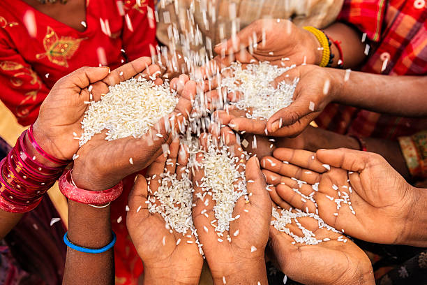
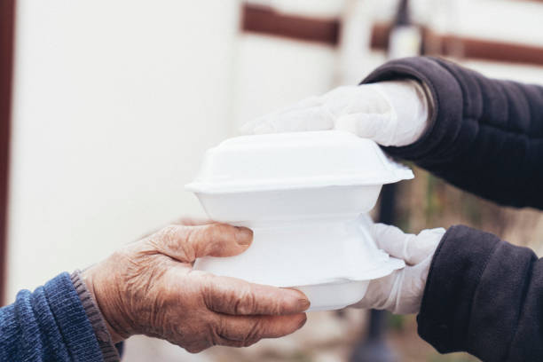
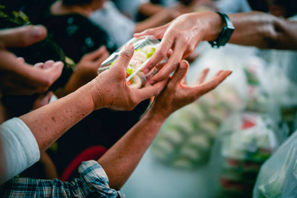
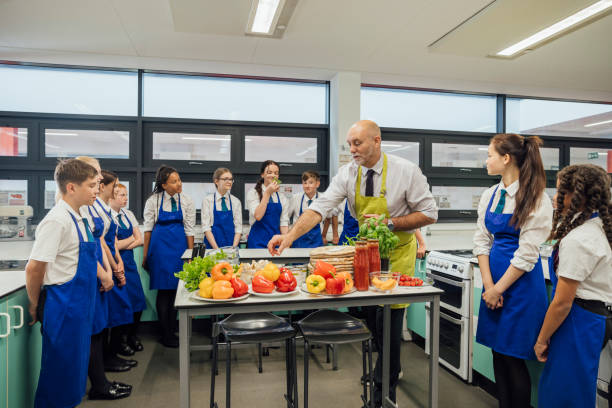

The Role of Individuals and Communities in Fighting Hunger
How Individuals Can Help
Each person has the power to make a difference. Actions like donating food, reducing waste, and supporting local farmers can help fight hunger.
- Food Donations: Contribute to local food banks and shelters.
- Reduce Waste: Plan meals and store food properly to minimize waste.
- Volunteer: Offer time at soup kitchens or hunger relief programs.

Community Initiatives
Communities play a vital role in ensuring food security. Programs like community gardens and food-sharing networks bring people together to tackle hunger.
- Community Gardens: Growing food collectively helps provide fresh produce.
- Food Pantries: Local organizations help distribute food to those in need.
- Support Local Farmers: Buying locally sustains small-scale agriculture.

The Role of Education and Awareness
Educating people about nutrition, food waste, and sustainable practices empowers them to make better choices and support the fight against hunger.
- School Programs: Teaching children about nutrition and food security.
- Public Awareness Campaigns: Encouraging responsible consumption and waste reduction.

Advocacy and Policy Changes
Government policies and social initiatives can help ensure food security at a larger scale.
- Food Subsidies: Supporting low-income families with food assistance.
- Zero Hunger Policies: Encouraging sustainable agriculture and fair food distribution.